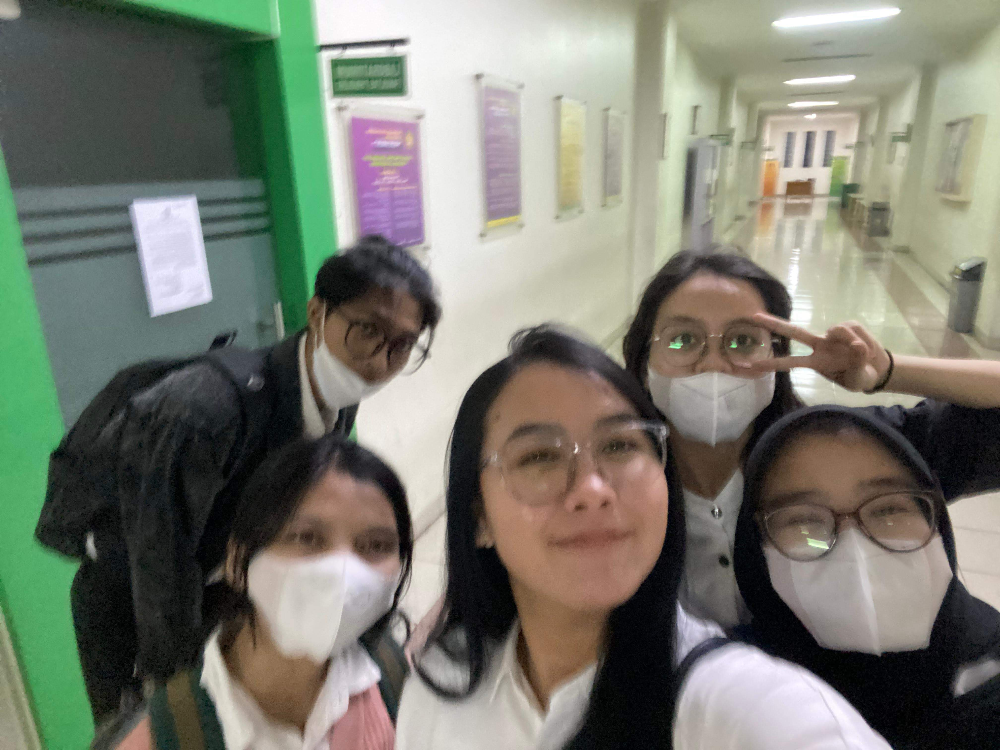
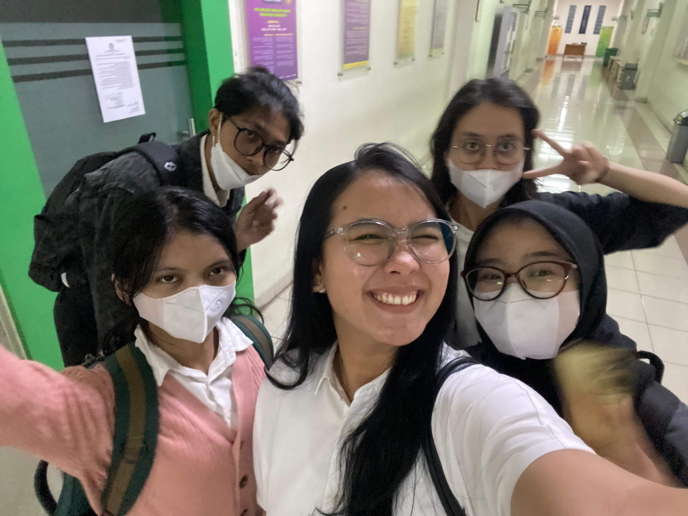
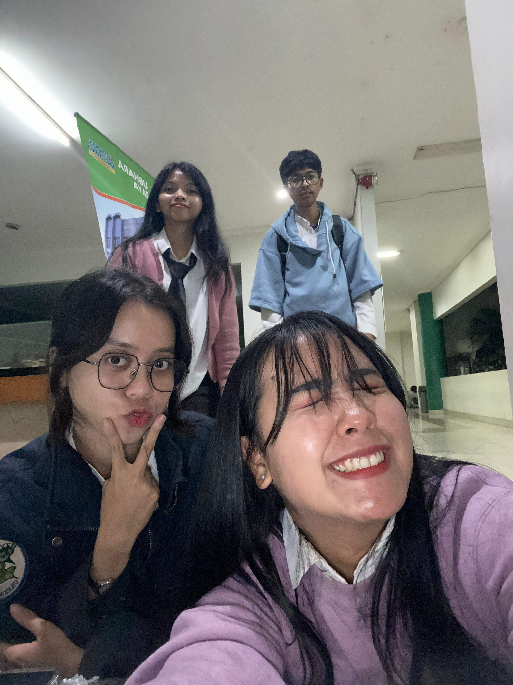
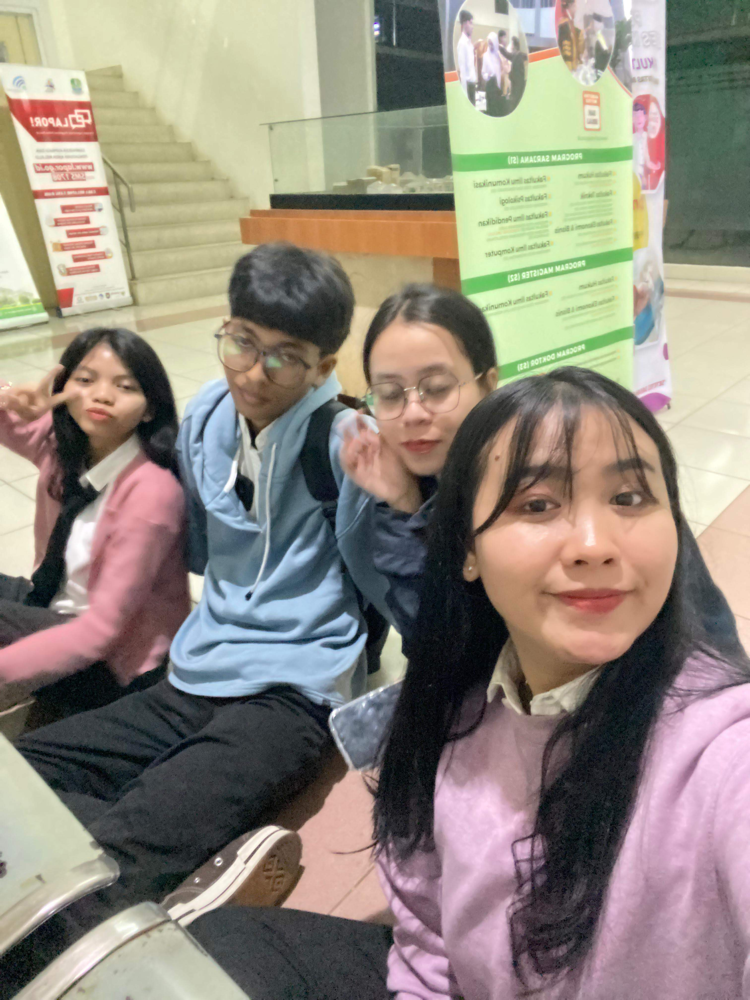
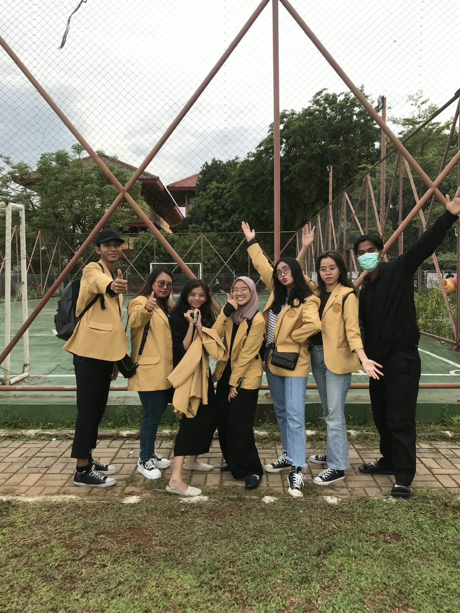
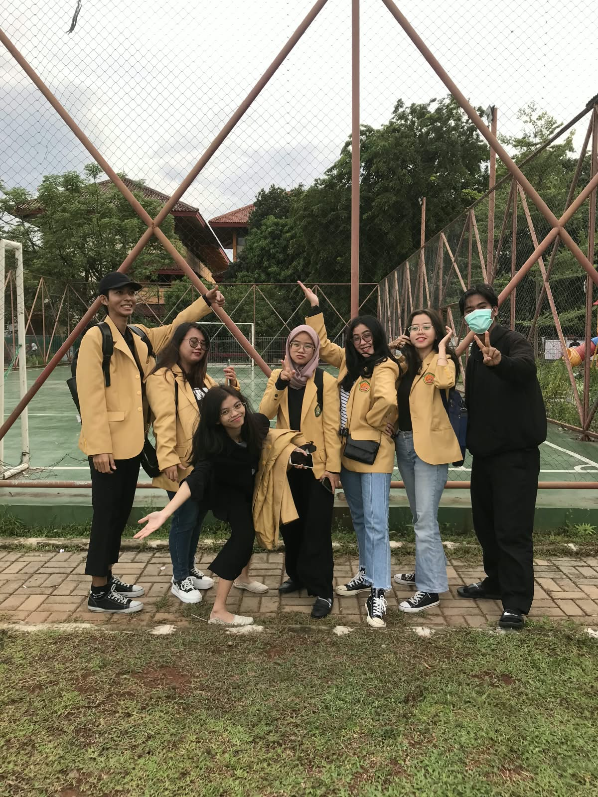
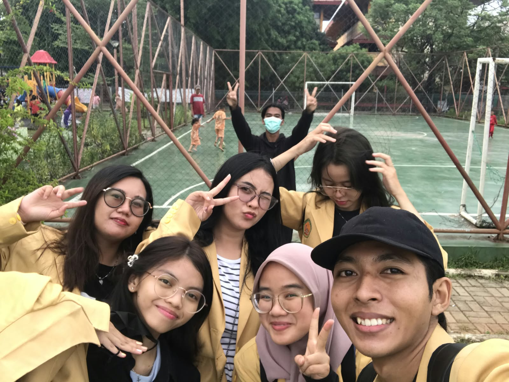
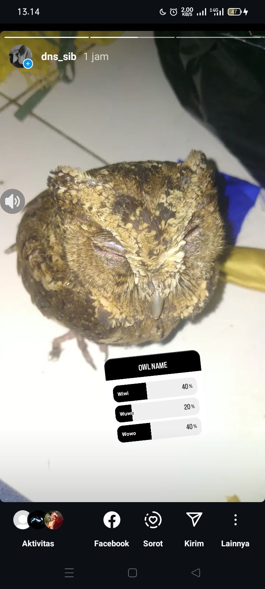
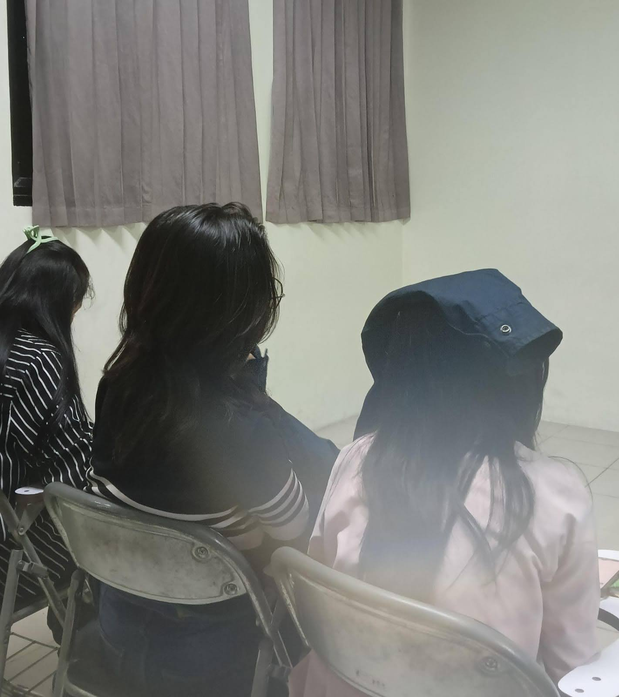
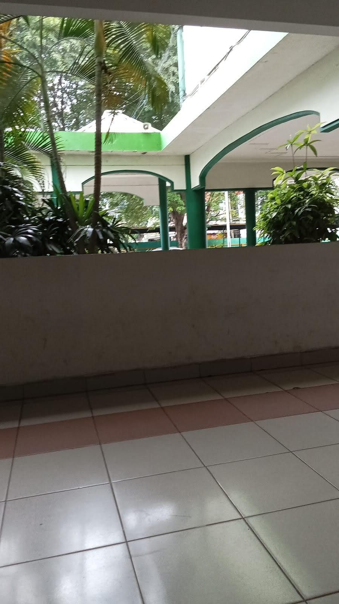

GROUP MEMORIES
CAMPUS DAYS

THE PLACE WE KEPT RETURNING TO
A place that became familiar simply because we spent so much time there.
Sebuah tempat yang menjadi familiar hanya karena terlalu sering kami datangi.

BETWEEN CLASSES
The moments between one responsibility and another were sometimes the ones worth remembering.
Momen di antara satu kesibukan dan kesibukan lainnya justru kadang menjadi bagian yang paling ingin diingat.

ONE MORE PHOTO
Because apparently, one photograph was never quite enough.
Karena ternyata, satu foto tidak pernah benar-benar cukup.

THE CANDID ONE
The photograph nobody planned. Usually, those become the most honest ones.
Foto yang tidak direncanakan. Biasanya justru menjadi foto yang paling jujur.
THE PROJECTS

THE FIRST DRAFT
Every finished project once looked unfinished.
Setiap proyek yang selesai pernah terlihat berantakan.

PRESENTATION DAY
A moment when preparation met reality.
Saat semua persiapan akhirnya bertemu dengan kenyataan.

FIGURING IT OUT
Not everything needed to be perfect. Sometimes we just needed to finish it together.
Tidak semuanya harus sempurna. Kadang yang penting hanya menyelesaikannya bersama.
THE DOCUMENT
A file that once looked like just another assignment.
File yang dulu terlihat seperti tugas biasa.
THE PRESENTATION
Proof that the presentation eventually happened.
Bukti bahwa presentasi itu akhirnya benar-benar terjadi.
THE FINAL VERSION
After drafts, edits, changes, and probably too many revisions.
Setelah draft, revisi, perubahan, dan mungkin terlalu banyak revisi.
THE SCREENSHOT
A tiny digital proof that this part of the journey happened.
Bukti digital kecil bahwa bagian perjalanan ini pernah terjadi.
THE LITTLE THINGS

THE FOOD BREAK
Because no archive of student life would be complete without documenting what kept everyone alive.
Karena arsip kehidupan mahasiswa rasanya tidak lengkap tanpa mendokumentasikan sesuatu yang membuat semua tetap hidup.

PROOF OF EXISTENCE
A selfie, because apparently the archive needed evidence.
Sebuah selfie, karena sepertinya arsip membutuhkan bukti.

THE RANDOM ONE
No explanation required.
Tidak membutuhkan penjelasan.

WHILE WAITING
Waiting for someone, waiting for something, or simply waiting for the day to move forward.
Menunggu seseorang, menunggu sesuatu, atau sekadar menunggu hari berjalan lagi.
THE CHAOS
 DOCUMENT · 001
DOCUMENT · 001
A conversation that probably made sense at the time.
Percakapan yang mungkin masuk akal pada saat itu.
 DOCUMENT · 002
DOCUMENT · 002
Evidence of how quickly a normal conversation can disappear into chaos.
Bukti betapa cepat percakapan biasa berubah menjadi kekacauan.
 DOCUMENT · 003
DOCUMENT · 003
Context unavailable. Laughter preserved.
Konteks tidak tersedia. Tawa tetap disimpan.
 DOCUMENT · 004
DOCUMENT · 004
An important document of absolutely questionable importance.
Dokumen penting dengan tingkat kepentingan yang sangat meragukan.
 DOCUMENT · 005
DOCUMENT · 005
Filed under: “we really kept this?”
Disimpan di folder: “serius ini disimpan?”
 DOCUMENT · 006
DOCUMENT · 006
No further explanation required.
Tidak membutuhkan penjelasan lebih lanjut.
SOMEWHERE ALONG THE WAY

OUTSIDE THE ROUTINE
A day that existed somewhere beyond classrooms, deadlines, and schedules.
Hari yang berlangsung di luar ruang kelas, deadline, dan jadwal.

A TABLE SOMEWHERE
Sometimes the place mattered less than the people sitting around it.
Kadang tempatnya tidak sepenting orang-orang yang duduk di sekitarnya.

SOMEWHERE WE WENT
A small record of a place we once shared.
Catatan kecil tentang tempat yang pernah kami datangi bersama.

AN ORDINARY DAY
Nothing extraordinary happened. That might be exactly why it belongs here.
Tidak ada hal luar biasa yang terjadi. Mungkin justru itu alasan kenapa ia pantas berada di sini.
THE LAST DAYS

THE LAST ASSIGNMENT
Pages, revisions, deadlines, and the feeling that the finish line was finally visible.
Halaman, revisi, deadline, dan perasaan bahwa garis akhir akhirnya mulai terlihat.

THE FINAL PRESENTATION
A room, a presentation, and everything that had been carried toward that moment.
Sebuah ruangan, sebuah presentasi, dan semua hal yang akhirnya dibawa menuju momen itu.

OFFICIALLY
The point where years of work became something official.
Titik ketika perjalanan panjang akhirnya menjadi sesuatu yang resmi.

THE GRADUATION
Different people may reach the moment at different times. The memory still belongs to the same chapter.
Setiap orang mungkin sampai di momen ini pada waktu yang berbeda. Tapi kenangannya tetap berasal dari bab yang sama.

BEFORE LEAVING
One final look at a place that had become familiar.
Satu pandangan terakhir pada tempat yang sudah terasa familiar.
STILL HERE

DIFFERENT DAYS
Different schedules. Different places. Different things to worry about.
Jadwal yang berbeda. Tempat yang berbeda. Hal-hal yang harus dipikirkan juga berbeda.

STILL MOVING
Everyone continues in their own direction.
Semua orang terus berjalan ke arahnya masing-masing.

SOMEWHERE AHEAD
Whatever comes next, this part happened first.
Apa pun yang datang berikutnya, bagian ini pernah terjadi lebih dulu.
“Maybe these photographs were never meant to tell a complete story. Maybe they only needed to prove that these moments happened.”
“Mungkin foto-foto ini memang tidak pernah dimaksudkan untuk menceritakan sebuah kisah yang lengkap. Mungkin mereka hanya perlu membuktikan bahwa semua ini pernah terjadi.”